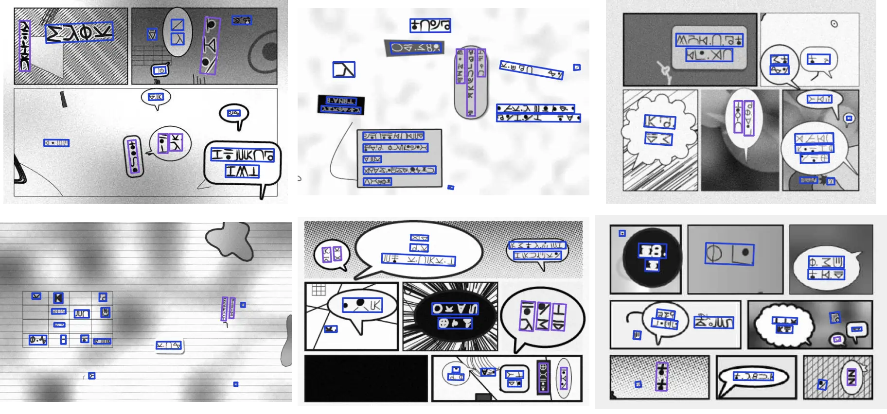

อธิบายแบบเข้าใจง่าย · ก้าวแรกสู่คอมพิวเตอร์วิทัศน์
AI ตัวจิ๋วหัดอ่านอักษรในฮันเตอร์ × ฮันเตอร์ได้อย่างไร
จะสอนคอมพิวเตอร์ให้อ่านอักษรลับที่มันไม่เคยเห็นมาก่อนได้อย่างไร นี่คือเส้นทางทั้งหมด ทีละขั้นและเป็นภาพ ตั้งแต่คอมพิวเตอร์มองเห็นรูปถ่ายอย่างไร ไปจนถึงมันเรียนรู้จากความผิดพลาดอย่างไร ไม่ต้องใช้คณิตศาสตร์หรือเขียนโค้ดเลย
อัปเดต 25 พฤศจิกายน 2026 ตอนนี้หน้าตัวอ่านมีโมเดลรุ่นใหม่สองชุด ชุดเร็วคือตัวอ่านขนาดเล็กในบทความนี้ที่ฝึกเพิ่มด้วยภาพที่คล้ายภาพถ่าย และอ่านตัวเลขกับเครื่องหมายวรรคตอนบางตัวได้ด้วย ส่วนชุดแม่นยำใช้โมเดลที่ใหญ่กว่า ซึ่งอ่านภาพถ่ายจริงได้ดีกว่ามาก ทุกอย่างด้านล่างยังทำงานแบบเดิม
อัปเดต 26 พฤศจิกายน 2026 เราฝึกตัวอ่านที่อ่านตัวเลขซึ่งวาดเป็นส่วนหนึ่งของตัวอักษรได้แล้วด้วย เช่น หมายเลขรุ่น “07” หรือ “!!” ท้ายชื่อเรื่อง แต่ยังไม่ได้ใส่ในหน้าตัวอ่าน รายละเอียดอยู่ในบทความเชิงลึก
โทรศัพท์ของคุณปลดล็อกได้เมื่อเห็นหน้าคุณ หารูปน้องหมาของคุณได้ครบทุกรูป และอ่านป้ายผ่านกล้องได้ ทั้งหมดนี้คือคอมพิวเตอร์วิทัศน์ (computer vision) หรือการสอนคอมพิวเตอร์ให้เข้าใจภาพ หน้านี้จะพาไปดูว่าโปรเจกต์คอมพิวเตอร์วิทัศน์เล็ก ๆ โปรเจกต์หนึ่งทำงานอย่างไรตั้งแต่ต้นจนจบ มันคือตัวอ่านสำหรับตัวอักษรที่แต่งขึ้นในอนิเมะเรื่อง ฮันเตอร์ × ฮันเตอร์ และมันเล็กพอจะอยู่ในโทรศัพท์ได้ เท่าที่เรารู้ นี่คือโปรแกรมแรกในโลกที่อ่านตัวอักษรชุดนี้จากรูปภาพได้
ภาพรวม
ก่อนจะลงรายละเอียด มาดูเส้นทางทั้งหมดที่รูปถ่ายหนึ่งรูปต้องเดินทางกันก่อน แต่ละจุดแวะคือไอเดียเล็ก ๆ ที่คุณจะได้เจอด้านล่าง แตะที่จุดแวะเพื่อกระโดดไปดูได้เลย
รหัสลับของภาษาญี่ปุ่น
ตัวหนังสือบนป้ายและการ์ดชื่อตอนใน ฮันเตอร์ × ฮันเตอร์ ดูเหมือนตัวอักษรชุดใหม่ทั้งชุด แต่ที่จริงมันคือรหัส ภาษาญี่ปุ่นมีตัวอักษรแทนเสียงที่เรียกว่าคานะ เช่น あ (a), か (ka) และ ん (n) และสัญลักษณ์ฮันเตอร์แต่ละตัวก็แทนคานะหนึ่งตัว มีสัญลักษณ์ทั้งหมด 47 ตัว จุดเล็ก ๆ ที่มุมจะเปลี่ยนเสียง: か (ka) กลายเป็น が (ga) ส่วนวงกลมเล็ก ๆ จะเปลี่ยน は (ha) เป็น ぱ (pa)
คอมพิวเตอร์มองเห็นอะไร
เวลาคุณดูรูปถ่าย คุณเห็นรูปร่าง สี และความหมาย แต่คอมพิวเตอร์เห็นตัวเลข ภาพทุกภาพคือตารางของช่องสี่เหลี่ยมเล็ก ๆ ที่เรียกว่าพิกเซล และแต่ละพิกเซลก็คือตัวเลขหนึ่งตัว ในภาพขาวดำ 0 หมายถึงสีดำ 255 หมายถึงสีขาว และค่าที่อยู่ระหว่างนั้นคือเฉดสีเทา
แถบในภาพนี้สูง 48 พิกเซลและกว้าง 768 พิกเซล รวมเป็นตัวเลข 36,864 ตัว งานทั้งหมดของคอมพิวเตอร์คือการเปลี่ยนตัวเลขเหล่านั้นให้เป็นตัวอักษรที่ถูกต้อง ไม่มีใครเขียนกฎแบบนั้นด้วยมือได้ ("ถ้าพิกเซลที่ 1,203 มืด และพิกเซลที่ 1,204 สว่าง…") เราจึงปล่อยให้คอมพิวเตอร์เรียนรู้กฎเองจากตัวอย่างแทน
หาขอบด้วยแผ่นฉลุจิ๋ว
เคล็ดลับแรกของคอมพิวเตอร์วิทัศน์คือฟิลเตอร์ (filter): แผ่นฉลุตัวเลขขนาดจิ๋ว 3×3 คอมพิวเตอร์จะเลื่อนมันไปทั่วภาพ ที่แต่ละตำแหน่ง มันจะคูณพิกเซล 9 ตัวที่อยู่ใต้แผ่นฉลุกับตัวเลข 9 ตัวบนแผ่นฉลุ แล้วบวกทั้งหมดเข้าด้วยกัน ถ้าลวดลายในภาพตรงกับแผ่นฉลุ คำตอบจะมีค่ามาก ถ้าไม่ตรง ค่าจะใกล้ศูนย์ แผ่นฉลุแบบหนึ่งหาขอบที่ลากขึ้นลง อีกแบบหาขอบที่ลากตามขวาง และอีกแบบทำให้ภาพเบลอ
ชั้นต่าง ๆ: จากขอบสู่สัญลักษณ์
ฟิลเตอร์ตัวเดียวหาได้แค่สิ่งง่าย ๆ อย่างขอบ โครงข่ายประสาทเทียม (neural network) จะซ้อนฟิลเตอร์ไว้หลายชั้น ชั้นแรก ๆ หาขอบ ชั้นถัดมารวมขอบเป็นเส้นตรงและเส้นโค้ง ชั้นหลัง ๆ หาส่วนต่าง ๆ ของสัญลักษณ์ และชั้นสุดท้ายตัดสินว่าเป็นสัญลักษณ์ตัวไหน ตัวอ่านในโปรเจกต์นี้มีหลายสิบชั้น และมีตัวเลขอยู่ในฟิลเตอร์ราว 320,000 ตัว ไม่มีใครเลือกตัวเลขเหล่านั้นด้วยมือ คอมพิวเตอร์หามันเจอเองด้วยการฝึกฝน
โครงข่ายประสาทเทียมที่คุณลองจิ้มเล่นได้
นี่คือโครงข่ายประสาทเทียมของจริง ที่เล็กพอจะมองเห็นได้ทั้งหมด มันรู้จักสัญลักษณ์แค่หกตัว ทางซ้ายคืออินพุตของมัน: ตารางพิกเซลขนาด 16 × 16 หรือตัวเลข 256 ตัว วงกลมแต่ละวงคือนิวรอน (neuron) ซึ่งเป็นเหมือนเครื่องคิดเลขจิ๋ว มันรับตัวเลขที่เข้ามา คูณแต่ละตัวด้วยน้ำหนัก (weight) ของมันเอง บวกทั้งหมดเข้าด้วยกัน แล้วส่งผลรวมต่อไปถ้ามันมากกว่าศูนย์ เส้นต่าง ๆ คือน้ำหนัก เส้นหนาคือน้ำหนักมาก เส้นสีน้ำเงินดันนิวรอนตัวถัดไปให้สูงขึ้น ส่วนเส้นสีม่วงกดให้ต่ำลง นิวรอนหกตัวทางขวาให้คะแนนกับสัญลักษณ์แต่ละตัว และคะแนนที่สูงที่สุดคือผู้ชนะ
ลองดูว่านิวรอนในคอลัมน์แรกต้องการอะไร น้ำหนักของมันเรียงกันเป็นลวดลายบนตาราง: สีน้ำเงินตรงที่มันอยากให้มีหมึก สีม่วงตรงที่มันไม่อยากให้มี ไม่มีใครวาดลวดลายเหล่านั้น โครงข่ายค้นพบมันเองระหว่างฝึกซ้อม เพราะลวดลายพวกนี้ช่วยให้มันแยกสัญลักษณ์ออกจากกันได้
การอ่านแบ่งเป็นสองงาน
เวลาคุณอ่านมังงะหนึ่งหน้า คุณทำสองอย่างโดยไม่รู้ตัว อย่างแรก คุณหาว่าตัวหนังสืออยู่ตรงไหนบ้าง บอลลูนนี้ ป้ายนั้น จากนั้นจึงอ่านทีละจุด แอปนี้ก็ทำแบบเดียวกัน โดยใช้โครงข่ายประสาทเทียมตัวเล็ก ๆ งานละหนึ่งตัว

ตัวอย่างมาจากไหน
โครงข่ายประสาทเทียมเรียนรู้จากตัวอย่าง: รูปภาพจำนวนมากที่แต่ละรูปมีคำตอบที่ถูกต้องแนบมาด้วย กองตัวอย่างนี้เรียกว่าชุดข้อมูล (dataset) ถ้าจะหัดอ่าน ตัวอ่านต้องใช้ตัวอย่างเป็นแสน ๆ ภาพ แต่ยังไม่เคยมีใครรวบรวมและเขียนคำตอบกำกับภาพอักษรฮันเตอร์ได้มากขนาดนั้น ภาพจริงมีอยู่แค่ไม่กี่สิบภาพ ภาพฝึกทุกภาพในโปรเจกต์นี้จึงสร้างขึ้นเอง โปรแกรมจะวาดสัญลักษณ์ แล้วจงใจทำให้มันเละ เพื่อให้โครงข่ายพร้อมรับมือกับความเละในโลกจริง และเพราะโปรแกรมเป็นคนวาดเอง มันจึงรู้คำตอบที่ถูกต้องเสมอ
ทำแบบนี้ซ้ำครึ่งล้านครั้งโดยสุ่มเลือกทุกครั้ง ก็จะได้ตำราเรียนเล่มโตไว้ใช้ฝึก โปรแกรมนี้ผ่านมาแล้วสี่เวอร์ชัน ทุกครั้งที่โครงข่ายพลาดกับของจริง เช่น ま ที่ถูกเขียนต่างออกไป หรือตัวการ์ตูนที่ยืนอยู่ข้างตัวหนังสือ โปรแกรมก็ได้รับการปรับให้วาดสิ่งนั้นได้ด้วย

ส่วนการหัดหาบรรทัดบนหน้ากระดาษ โปรแกรมตัวที่สองจะวาดหน้ามังงะปลอมขึ้นมาทั้งหน้า มีทั้งช่องภาพ บอลลูนคำพูด และป้าย นอกจากนี้ยังใส่สิ่งที่ไม่ใช่อักษรฮันเตอร์ลงไปอีกเยอะ เช่น ภาษาอังกฤษ ภาษาญี่ปุ่น และไอคอน เพื่อให้ตัวหาบรรทัดเรียนรู้ที่จะมองข้ามสิ่งเหล่านั้น

มันเรียนรู้อย่างไร: เดา ตรวจ ปรับ
ตอนเริ่มต้น ตัวเลขในโครงข่ายเป็นค่าสุ่ม คำตอบที่มันเดาจึงมั่วไปหมด จากนั้นมันจะฝึกซ้อมไปทีละรอบ:
- ให้ดูตัวอย่างเป็นชุด (ในที่นี้คือบรรทัดที่สร้างขึ้นครั้งละ 128 บรรทัด)
- ให้มันเดาว่าแต่ละบรรทัดเขียนว่าอะไร
- ตรวจคำตอบที่เดาเทียบกับคำตอบที่ถูกต้อง แล้ววัดว่าผิดไปมากแค่ไหน
- ปรับตัวเลขทุกตัวของมันทีละนิด ไปในทิศทางที่จะทำให้คำตอบที่เดาผิดน้อยลง
การปรับแต่ละครั้งเล็กนิดเดียว แต่หลังจากฝึกไปหลายพันรอบ โครงข่ายก็เก่งขึ้นมาก คล้ายกับการซ้อมชู้ตลูกโทษในบาสเกตบอล ที่ทุกครั้งที่ชู้ตพลาดจะบอกคุณว่าต้องปรับการเล็งอย่างไร
มีกฎสำคัญข้อหนึ่ง: บรรทัดที่ใช้ทดสอบต้องแยกไว้ต่างหากจากบรรทัดที่ใช้ฝึก ไม่อย่างนั้นโครงข่ายอาจแค่จำคำตอบไว้ เหมือนนักเรียนที่เห็นข้อสอบมาก่อน แล้วเราก็จะเข้าใจผิดว่ามันเก่งกว่าที่เป็นจริง
มันอ่านหนึ่งบรรทัดอย่างไร
ตัวอ่านมองแถบหนึ่งแบบเดียวกับที่คุณอาจใช้นิ้วไล่ไปตามบรรทัด มันเลื่อนไปทีละก้าวเล็ก ๆ ทั้งหมด 192 ก้าว ก้าวละ 4 พิกเซล และในแต่ละก้าวมันจะบอกว่าเห็นสัญลักษณ์ตัวไหน หรือบอกว่า "ตรงนี้ไม่มีอะไร"
ก่อนอื่น แถบภาพจะผ่านชั้นต่าง ๆ ของโครงข่าย แบบเดียวกับโครงข่ายหกสัญลักษณ์ด้านบน เพียงแต่มีนิวรอนมากกว่ามาก แต่ละชั้นจะเปลี่ยนอินพุตของมันให้เป็นภาพชุดใหม่ที่เรียกว่าแผนที่ฟีเจอร์ (feature map) และแต่ละแผ่นจะสว่างขึ้นทุกที่ที่มันเจอลวดลายของตัวเอง ยิ่งผ่านไปหลายชั้น ภาพก็ยิ่งเตี้ยลง (สูง 48 พิกเซล แล้ว 24, 12, 6, 3 และ 2) แต่มีจำนวนมากขึ้น (สูงสุด 64 แผ่น) สุดท้าย แต่ละก้าวตามแถบจะถูกบรรยายด้วยรายการตัวเลข 64 ตัว และชั้นสุดท้ายจะเปลี่ยนรายการนั้นเป็นคะแนนของคำตอบที่เป็นไปได้ทั้ง 75 แบบ
ก้าวส่วนใหญ่จะบอกว่า "ไม่มีอะไร" เพราะตกอยู่ระหว่างสัญลักษณ์ ตัวอ่านจึงเก็บกวาดในสองขั้น ขั้นแรก หลายก้าวติดกันที่เห็นสัญลักษณ์ตัวเดียวกันจะถูกรวมเข้าด้วยกันและนับเป็นตัวเดียว จากนั้นก้าวที่บอกว่า "ไม่มีอะไร" จะถูกทิ้งไป ที่เหลืออยู่ก็คือข้อความ
ทำไมต้องมีคำตอบ "ไม่มีอะไร" ด้วย ก็เพราะบางคำมีสัญลักษณ์ตัวเดียวกันอยู่ติดกันสองตัว เช่น ここ (koko) ถ้าไม่มีก้าวที่บอกว่า "ไม่มีอะไร" คั่นกลาง こ สองตัวนั้นก็จะถูกรวมกลายเป็นตัวเดียว
ลองสังเกตคำตอบที่มันเดา เมื่อตัวอ่านเห็น ぐ (gu) ตัวเลือกอันดับสองของมันคือ く (ku) ซึ่งเป็นรูปร่างเดียวกันแต่ไม่มีจุด ส่วนที่ ど (do) ตัวเลือกรองลงมาคือ と (to) โครงข่ายไม่ได้แค่เลือกคำตอบเดียว แต่ให้ความมั่นใจกับทุกคำตอบที่เป็นไปได้ และแอปก็ใช้ความมั่นใจเหล่านั้นตัดสินว่าจะเชื่อผลการอ่านไหนได้บ้าง
มันหาบรรทัดอย่างไร
ตัวหาบรรทัดไม่ได้วาดกรอบออกมาตรง ๆ แต่มันจะระบายสีแกนกลางของตัวหนังสือทุกบรรทัด เหมือนปากกาไฮไลต์ที่แตะเฉพาะตรงกลางของแต่ละบรรทัด จากนั้นเรขาคณิตง่าย ๆ จะขยายแถบไฮไลต์แต่ละแถบกลับออกมาเป็นกรอบ การไฮไลต์แค่ตรงกลางช่วยไม่ให้บรรทัดที่อยู่ชิดกันหลอมรวมเป็นก้อนเดียว และยังมีการระบายสีอีกชุดหนึ่งเพื่อบอกว่าแต่ละบรรทัดเขียนตามแนวนอนหรือแนวตั้ง


เล็ก เร็ว และเป็นส่วนตัว
โมเดล AI ส่วนใหญ่ใหญ่เกินกว่าจะรันในเว็บเบราว์เซอร์ของโทรศัพท์ได้ แต่โมเดลสามตัวนี้เล็กจิ๋ว รวมกันประมาณ 1 MB เล็กกว่ารูปถ่ายจากกล้องโทรศัพท์เพียงรูปเดียว มีเคล็ดลับสองอย่างที่ทำให้เป็นแบบนี้ได้
อย่างแรก ตัวโครงข่ายเล็กมาตั้งแต่ต้น เพราะสร้างจาก MobileNet ซึ่งเป็นแบบที่ออกแบบมาเพื่อโทรศัพท์ อย่างที่สอง ตัวเลขทุกตัวในโครงข่ายถูกเก็บไว้ใน 1 ไบต์แทนที่จะเป็น 4 ไบต์ คล้ายกับการปัดเศษสตางค์ทิ้งให้เหลือแต่บาทเต็ม ๆ ถ้าทำอย่างระมัดระวัง การปัดแบบนี้แทบไม่ทำให้ความแม่นยำลดลงเลย
ทั้งหมดนี้ทำงานบนอุปกรณ์ของคุณ โมเดลจะถูกดาวน์โหลดมาพร้อมหน้าเว็บเพียงครั้งเดียว และรูปของคุณจะไม่ออกไปจากโทรศัพท์เลย โปรแกรมที่ใช้รันโมเดลเขียนด้วยภาษาที่ชื่อ Rust แล้วแปลงเป็น WebAssembly ซึ่งเป็นรูปแบบที่เบราว์เซอร์สมัยใหม่ทุกตัวรันได้
ตัวหนังสือแนวตั้ง
ภาษาญี่ปุ่นมักเขียนจากบนลงล่าง และบอลลูนคำพูดในมังงะก็มักเขียนแบบนั้น แอปจะจับคอลัมน์เหล่านั้นหมุนให้นอนลง จนกลายเป็นแถบธรรมดาที่อ่านจากซ้ายไปขวา จากนั้นตัวอ่านตัวที่สองซึ่งฝึกกับคอลัมน์ที่หมุนแล้วเท่านั้นจะเป็นผู้อ่าน
โหมดกล้องสด
เล็งกล้องโทรศัพท์ไปที่อักษรฮันเตอร์ แล้วตัวอ่านจะอ่านภาพหลายครั้งต่อวินาที การมองเพียงครั้งเดียวอาจอ่านสัญลักษณ์ผิดไปหนึ่งตัว ทำให้ข้อความที่แสดงกะพริบเปลี่ยนไปมา แต่ละบรรทัดจึงจำผลการอ่านห้าครั้งล่าสุดไว้ แล้วแสดงผลที่เห็นบ่อยที่สุด
สิ่งที่มันยังทำไม่ได้
- มันเคยฝึกกับภาพที่สร้างขึ้นเองเท่านั้น ภาพสแกนและภาพถ่ายจริงอาจยากกว่านี้ และตอนนี้ยังไม่มีชุดตัวอย่างจริงขนาดใหญ่ไว้ใช้ทดสอบ
- ตัวหนังสือที่เล็กมากมักหลุดรอดไป ให้แตะที่ตัวหนังสือนั้นในตัวอ่าน แล้วตัวหาบรรทัดจะซูมเข้าไปดูใกล้ ๆ อีกครั้ง
- ตัวหนังสือแบบอื่นยังอาจหลุดเข้ามาได้ เวอร์ชันแรกตีกรอบภาษาอังกฤษ ภาษาญี่ปุ่น และไอคอนไปด้วย ตัวหาบรรทัดจึงถูกฝึกใหม่ด้วยหน้าที่เต็มไปด้วยตัวหนังสือแบบนั้น จนเรียนรู้ที่จะมองข้ามมัน บนหน้าทดสอบที่ส่วนใหญ่ไม่ใช่อักษรฮันเตอร์ กรอบที่ตีผิดบนตัวหนังสือทั่วไปลดลงจาก 25 กรอบต่อหน้าเหลือไม่ถึง 1 กรอบ นอกจากนี้แอปยังซ่อนบรรทัดที่มันไม่มั่นใจไว้ด้วย
- ไม่มีเครื่องหมายวรรคตอน และคานะตัวเล็ก (ゃ, っ) จะออกมาเป็นตัวขนาดปกติ
คำศัพท์น่ารู้
- คอมพิวเตอร์วิทัศน์ (computer vision)
- การสอนคอมพิวเตอร์ให้เข้าใจภาพนิ่งและวิดีโอ
- พิกเซล (pixel)
- ช่องสี่เหลี่ยมเล็ก ๆ หนึ่งช่องของภาพ เก็บเป็นตัวเลขหนึ่งตัว (หรือสามตัวสำหรับภาพสี)
- ฟิลเตอร์ (filter)
- แผ่นฉลุตัวเลขขนาดเล็กที่เลื่อนไปบนภาพเพื่อหาลวดลาย เช่น ขอบ
- โครงข่ายประสาทเทียม (neural network)
- ฟิลเตอร์หลายชั้นที่ซ้อนกัน โดยตัวเลขข้างในได้มาจากการเรียนรู้ ไม่ได้เขียนด้วยมือ
- ชุดข้อมูล (dataset)
- กองตัวอย่างที่แต่ละตัวมีคำตอบที่ถูกต้องแนบมา ซึ่งโครงข่ายใช้เรียนรู้
- การฝึก (training)
- วงจร เดา ตรวจ ปรับ ที่ใช้ปรับจูนตัวเลขของโครงข่าย
- ชุดทดสอบ (test set)
- ตัวอย่างที่กันไว้เพื่อตรวจโครงข่ายอย่างยุติธรรม และไม่เคยใช้ฝึกเลย
- ความมั่นใจ (confidence)
- โครงข่ายแน่ใจแค่ไหนกับแต่ละคำตอบที่เป็นไปได้ ตั้งแต่ 0% ถึง 100%
- โมเดล (model)
- โครงข่ายที่ฝึกเสร็จแล้วและพร้อมใช้งาน แอปนี้มีสามตัว รวมกันประมาณ 1 MB
ถึงตาคุณแล้ว
ทุกอย่างในหน้านี้ทำขึ้นบนคอมพิวเตอร์ที่บ้านเครื่องเดียว ด้วยเครื่องมือฟรีและความอยากรู้อีกเพียบ คุณเริ่มสำรวจคอมพิวเตอร์วิทัศน์ได้ตั้งแต่วันนี้:
- ลองใช้ตัวอ่านกับหน้าตัวอย่าง แล้วลองกับภาพแคปหน้าจอของคุณเอง หาดูว่ามันพลาดตรงไหน แล้วลองคิดว่าทำไม
- คิดตัวอักษรลับของคุณเองลงบนกระดาษ แล้วลองคิดต่อว่า คุณจะสร้างภาพฝึกปลอม ๆ ของมันเป็นพัน ๆ ภาพได้อย่างไร
- ฝึกโมเดลภาพของคุณเองในเบราว์เซอร์ เครื่องมือฟรีอย่าง Teachable Machine ของ Google ช่วยให้คุณสอนโมเดลให้แยกแยะสิ่งต่าง ๆ ผ่านเว็บแคมได้ในไม่กี่นาที โดยไม่ต้องเขียนโค้ด
- เรียนเขียนโปรแกรมสักนิด Python เป็นภาษาที่ใช้กับ AI มากที่สุด และมีคอร์สฟรีสำหรับมือใหม่อยู่ทุกที่ ไอเดียในหน้านี้ (พิกเซล ฟิลเตอร์ การฝึก) คือจุดเริ่มต้นของทุกคอร์สคอมพิวเตอร์วิทัศน์
ลองใช้ดู
เปิดตัวอ่าน แล้วเลือกรูปถ่ายหรือภาพแคปหน้าจอ ลองหน้าตัวอย่าง หรือเล็งกล้องไปที่อักษรฮันเตอร์